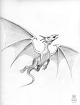

103
Je cours entre les arbres pour trouver un espace qui me permettrait de mieux voir le ciel. Je m'accroche à une branche et je regarde attentivement. Incroyable! Un dragon vole dans le ciel juste en haut de moi! Ouf. La tête me tourne. Et je tombe de ma branche. Et soudain un souvenir me revient! Je vois des dragons dans le ciel. Ils se lancent des jets de feu l'un vers l'autre! Il y a un dragon rouge et un dragon noir qui se battent férocement ensemble. C'est tout ce que je me souviens. Note: ajoute ce souvenir sur la feuille, au cas où je l'oublierais encore. (Souvenir #2)
|